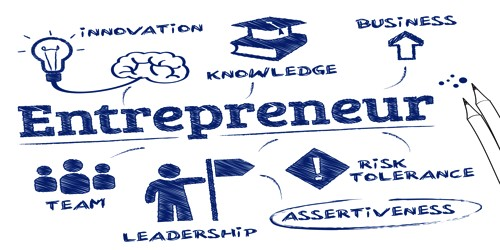
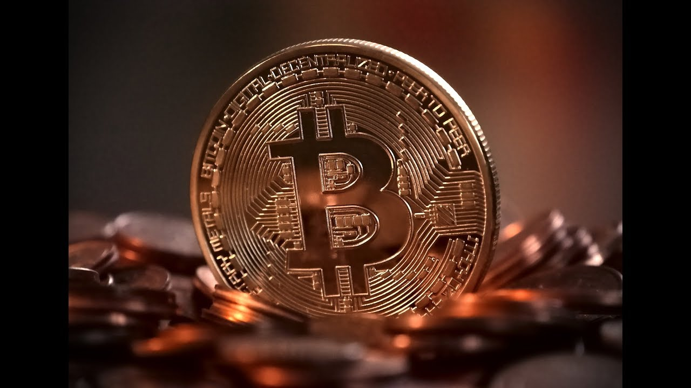

Hola Amigos!!
Getting rich quickly - it's that elusive dream that so many of us share. Somehow, if we learn how to get rich quickly, then all of our problems will evaporate. But is there really a way to get rich quickly? And, even if you do, does it really make life that much better? Sure, getting rich quickly, even if you start out with nothing, is possible (if it weren't, nobody would ever play the lottery!), but it is by no means guaranteed. On top of that, having more money doesn't mean your life will suddenly be perfect. Getting rich quickly also doesn't guarantee you'll stay rich if you don't know how to manage your sudden wealth. Here, we discuss some common get-rich-quick methods and show you why relying on these tactics is not a good substitute for a solid financial plan. Instead, if you want to get rich, we'll let you in on the real way to do it. Spoiler alert: slow and steady is the way to goGetting rich quickly is a little bit Risky but if you play smart it's just a piece of cake . The contents here are risky do not use it without proper knowledge.There are many ways to get rich in this internet era
At present , We take 7 major ways to get rich quickly
- NFT
- Affiliate Marketing
- Entreprenuership
- CryptoCurrency
- Stock Market
- Inventions
- Buy and Sell
Non-Fungible Tokens(NFT):

Making some money in the NFT space requires patience, lots of research, self-control, and most of all- luck. Often your lucky breaks/winning NFTs are more than enough to offset your losses.NFT stands for Non-Fungible Tokens. A token is just like a certificate of ownership, while non-fungible means non-imitable and unique.I'll give you a simple example. A ball of a football game is fungible, as it can be easily reproduced in a factory. However, a ball signed by Christiano Ronaldo with a mention of your name is non-fungible. Even if he signed 2 balls with the same content, the two balls are individually unique and will never be the same. So, simply said, a non-fungible token is an ownership certificate of a non-fungible item, but it's not just that. The certificate is digitally recorded in the blockchain. This doesn't only mean that it will never be lost or damaged, it is also (almost) impossible to be hacked, stolen, or faked! Plus, everyone can easily verify the ownership by simply accessing the internet.A lot of things can be made into NFT, but mostly are digital artworks such as digital paintings, edited videos, and photoshopped camera shots. You can even take a picture of a physical item and sell it off as an NFT, up to your creativity.
For more information visit our how to get rich with nft. If you're interested in making nft , complete our courses.
Affiliate Marketing

if you want to make big money through affiliate marketing (e.g. $500,000 per year like Super Affiliate author Rosalind Gardner), you will have to work hard. Hard work alone won't cut it though. You need to either be educated in SEO and web design or you need to be smart enough, and simultaneously humble enough, to learn from mistakes and make the most of them. Here is some insight into how others have made good money with affiliate marketing as well as insight into how you can do the same.If you want to make real money with affiliate marketing, then set aside the idea that it is a get-rich-quick scheme. Affiliate marketing will only lead to immediate riches if you cheat and that, eventually, can lead to fines or jail time. If you want to make money at affiliate marketing and sustain that income over the years, then you have to do it right and that takes time.
Keep It Simple
One of the biggest mistakes that affiliate marketers make is to try to do too much at once. They try to create dozens of websites to promote oodles of products and then they wonder why they feel overwhelmed. Taking on too much, especially in the beginning, is a recipe for disaster. Start your affiliate marketing career by choosing a handful (maybe half a dozen) of products that you are interested in, that you feel you can learn about, and that you can market confidently. If you know a lot about microwave ovens, for instance, then you should look for an affiliate program in that niche and avoid, say, conventional ovens. Of course, that's a silly example, but the point remains. Focus your efforts on a few great products and a few great websites to promote them.
Choose Good Programs
In the past, every affiliate marketing program was a good one. Today, there are a lot of scams and schemes being touted as affiliate marketing. Many times you can make money with these risky programs, but they make it hard by taking large percentages, paying small commissions, and asking for an investment upfront. Ironically, the best affiliate programs that are most likely to make you wealthy are the programs that don't claim to be able to make you rich. To find a good program, start first with companies that are large and trusted. They generally offer lower commissions, but that is because they actually pay their commissions. Once you know which programs are interesting, scour the web to find out if they actually pay. You don't want to put in the work, over months usually, just to find out that the company won't pay. Finally, make sure that the program has a support system in place. The best programs should not only be in touch when you first sign up, they should also email you when you make sales, keep you up to date about earnings, and be available for problem-solving and troubleshooting.
Niche Marketing
The best affiliate marketers don't do everything on their own. In fact, it is impossible to make good money doing absolutely everything from web design to content creation. You can choose to do one or two things, but remember that your main job is not unlike that of a CEO. You are in charge of coordinating the entire marketing scheme. You need to know and understand the details, but you don't necessarily have to have your hands on every aspect. Learn how to delegate well because it will become your greatest assetPeople often make the mistake of thinking that they need to go big or go home. The truth is that you need to be good at whatever you choose to do and niche markets make it easier for you to focus and hone your skills. Don't try to tackle all of sporting equipment, for instance. Focus instead on the one or two sports about which you are passionate. In short, pick a niche and develop a deep knowledge about it. You'll make more money in a niche topic than you will on a general topic for two reasons. First, you'll be speaking to enthusiasts, people who live and breath the issue you are dealing with. They will be interested in what you have to write and in what you have to sell because it fits into a topic that they already care about and because you are promoting high-quality, expert content. Marketing to them will simply be easier. The second reason that niche topics will bring you more money is because competition is less fierce. Rather than compete against dozens or even hundreds of other marketers, you'll only have to compete with a handful. In fact, you may not even compete with the other marketers at all. They may become your friends because you share similar interests. Together you will tackle the market to make even more money.
Expert SEO
You will need to hone your SEO skills to do well at affiliate marketing. That means that you either have to know everything there is know about SEO yourself or you need to know enough to make the right hiring decisions. Either way, you need to start learning about SEO because it is going to be the force driving traffic to your website.
If you're interested in Affiliate Marketing , complete our courses on Affiliate Marketing
Entreprenuership
Entrepreneurship is the ability and readiness to develop, organize and run a business enterprise, along with any of its uncertainties in order to make a profit. The most prominent example of entrepreneurship is the starting of new businesses.In economics, entrepreneurship connected with land, labour, natural resources and capital can generate a profit. The entrepreneurial vision is defined by discovery and risk-taking and is an indispensable part of a nation's capacity to succeed in an ever-changing and more competitive global marketplace.
First and foremost, you've got to look the part of a successful entrepreneur, so spend all the money you have and any money you can borrow on a really fast car, preferably something Italian. You definitely want to have a car that's faster than a venture capitalist's Porsche ; you need to command their respect. Whatever you do, don't save your money to invest in your business. You should expect investors to put up all the money and take all the risk. If you're serious about entrepreneurship, quit your job. Don,t wait until you have a business plan or even an idea. Quit your job now. What self-respecting entrepreneur has a job working for someone else? The last thing you want to do is let your current employer help fund your new business.. Don't waste any time developing a new technology or even developing a thoughtful plan. Copy someone else. Do something simple.Whatever you do, don't leverage your specific skill set and experience to create something new or something that you have a real passion for. You want to get rich quick and doing something hard is going to take a long time. Call it something cool. Give your company a really high-tech sounding, made up name. Be sure to describe your product in technological terms no one understands. With just a little creativity you can make a sponge into a high tech product that will revolutionize one industry after another. It's all about the marketing. Don't waste a lot of money on research and development.The last thing you want is to have a team around you that will challenge your ideas and tell you when you're wrong. What a waste of time. Your business plan is easy; you can do it all by yourself. OK, maybe you'll need to hire a virtual assistant in the Philippines for $4 per hour, but that's it. No one else. You don't want to build a team of experienced executives who can see problems you can't. You certainly don't want young, passionate people from top schools who care more about changing the world than making a buck on your team.Ignore social issues. There is no money in solving social problems, so be sure to steer clear of that whole arena. Be careful, because if you wander into social entrepreneurship you're likely to violate the last rule, too. Double jeopardy. Stay focused on the financial bottom line. The only thing that matters is profit.Raise lots of money. Now that you have a simple business idea that you can execute all by yourself and you've spent all of your money on an Italian sports car, you're ready to raise money. Whatever you do, don't give up more than 10% of the company or control of the board. You are the only thing needed for success. Anyone's money will do.Go public. As soon as you generate a few dollars in revenue, there are legions of financial advisors ready to help you take your company “to the next level” by taking your business public. Don't be concerned that these guys work for firms you've never heard of; they're going to let you in on secrets that Goldman Sachs doesn't understand. This may involve something called a “reverse merger” into a corporate shell, but you don't need to worry yourself with the details. The equity line of credit they offer you will provide all the money you ever need. The death spiral preferred will always be available if you need it.
If you're interested in Entrepreneurship, complete our courses on Entrepreneurship
CryptoCurrency
Bitcoin has about tripled over the trailing three months, has more than quadrupled over the trailing year, and is up near to 7,200% over the past five a long time. Unless you were fortunate sufficient to lock onto a low-volume, unfamiliar small-cap company in early 2016, you likely do not have a stock that's outflanked bitcoin.But in show disdain toward of its picks up, I too see bitcoin as an inalienably perilous venture. That's since it endures from the deadly imperfection of shortage vs. utility. Bullish bitcoin supporters see the 21 million token cap on bitcoin as the driving drive behind this rally. Having a restricted number of mineable tokens implies bitcoin will dodge the deflationary aspect that plagues fiat monetary forms, just like the U.S. dollar. The conviction is that as the U.S. (and worldwide) cash supply develops, the esteem of each bitcoin will soar. Optimists too tout the utility of bitcoin. Detachable down to eight decimal places, getting in on the bitcoin fever can be done with fair some dollars. Assist, more businesses than ever acknowledge bitcoin as a frame of installment. The issue is that bitcoin's esteem shows up to be subordinate on shortage and utility — however its plan makes it such that as it were one is conceivable. In case it's seen as rare, at that point there will never be sufficient tokens in circulation to form it a dependable medium of trade (i.e., negligible utility). Meanwhile, if the objective is to form bitcoin a substitution for cash, then it won't be rare, since its token limit will ought to be raised. What's more, a substantial contention might be made that bitcoin gives nothing more than the untrue recognition of shortage. Instead of being obliged by anything physical, the as it were thing halting bitcoin's token constrain from being raised is community agreement. By and by, I believe physical shortage more than what are viably pinky guarantees not to raise the token restrain.There's a stronger way to induce wealthy off of bitcoin You can still get wealthy off of bitcoin without really owning it. The savvy way to do so would be to purchase auxiliary businesses that specifically advantage from the bitcoin fever, no matter how well or ineffectively bitcoin really does. Here are three ways bitcoin can make you wealthy without the sickening instability.As the ubiquity and reach of cryptocurrencies are rising, increasingly companies are presently utilizing these advanced coins to pay their employees' pay rates, among other things. Crypto installments are secure, low-cost and straightforward. Additionally, it's simple and reasonable to pay your remote/freelance specialists in bitcoin instead of sending cash through other alternatives. Whether you're a engineer, a essayist or a originator, you'll discover bounty of universal companies willing to pay in cryptocurrencies for your work/services.Final but not slightest, you'll make benefits with cryptocurrencies by creating one of your claim. Yes, you'll construct your possess cryptocurrency, and it's not as frightening because it may sound. Making and propelling your cryptocurrency will, be that as it may, require you to be a few kind of expert in blockchain. You must have the fundamental information of how blockchain and cryptocurrencies work. Then, you wish to assess different possibilities and come up with the sort of coin you would like to construct. You will on the other hand contract a blockchain master or group for the work. Once your coin is created, you'll begin offering it through ICO or trades. Of course, you'll ought to advance a part within the starting so that clients know what your coin is all approximately and why they ought to contribute in it
If you're interested in Cryptocurrency, complete our courses on Cryptocurrencies